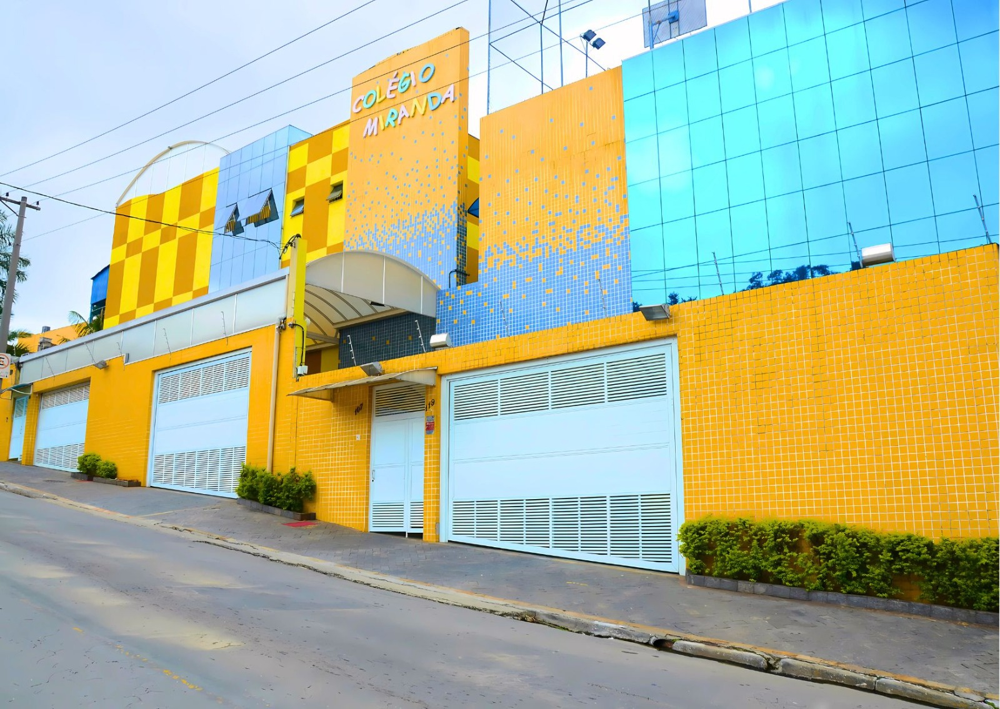
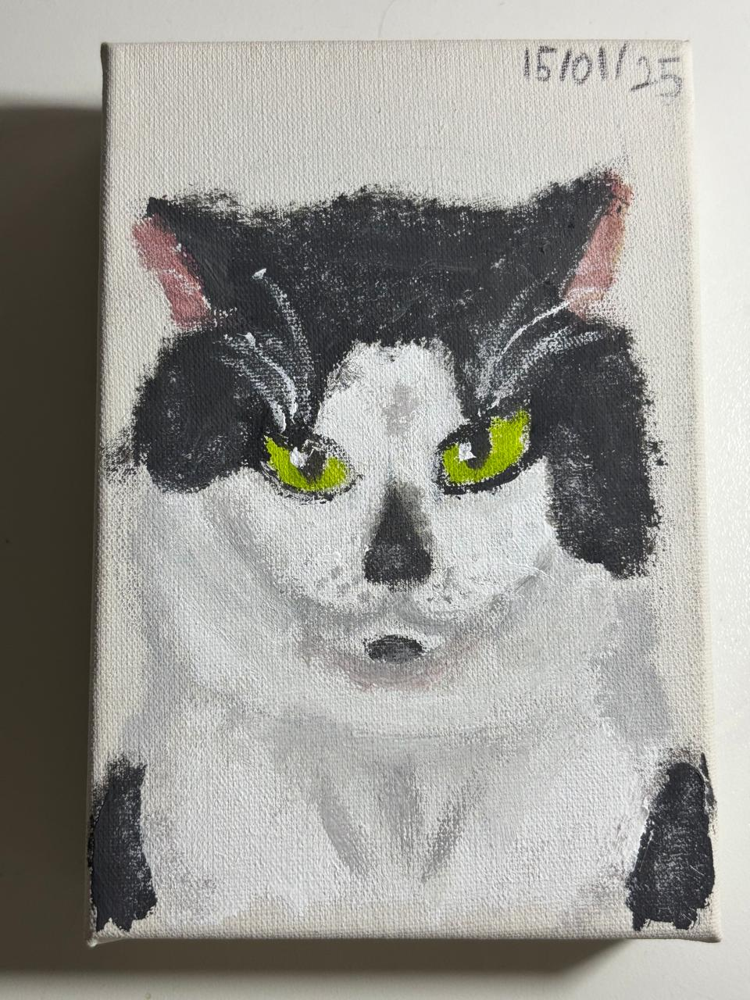
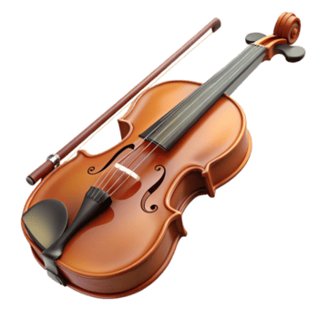
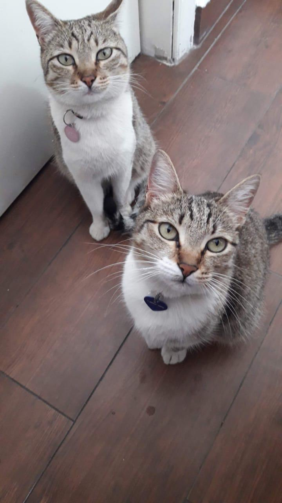
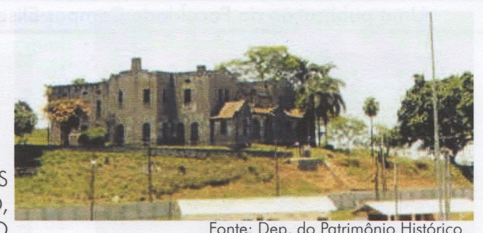
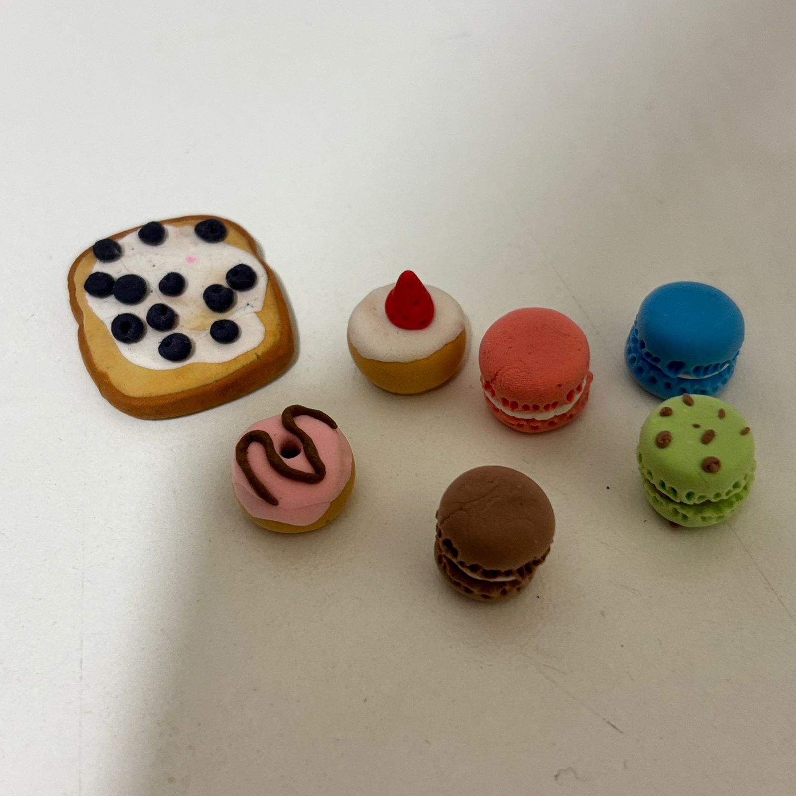
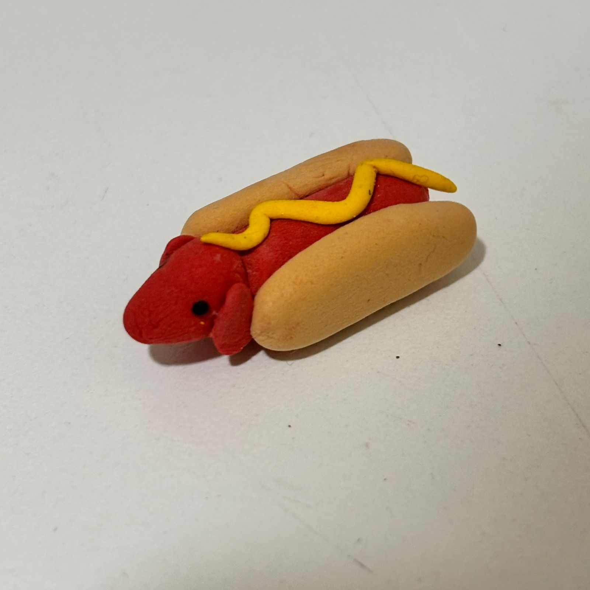
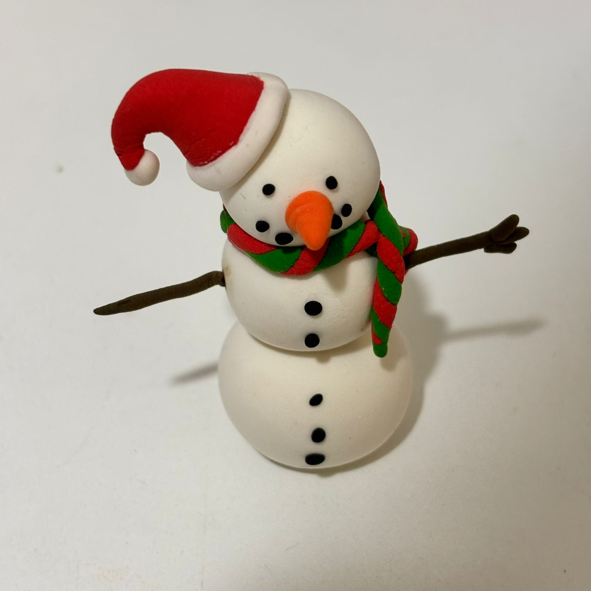
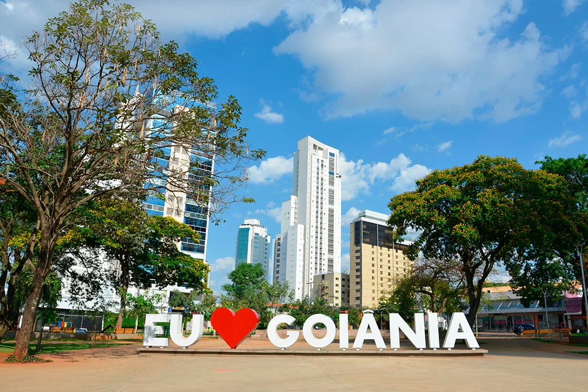

oi! prazer, eu sou a
yasmin

Yasmin Nakamura, 15 anos, de Pirituba, São Paulo. Aprendendo violino e apaixonada por programação.
conhecer mais meus lugaresoi! prazer, eu sou a
Yasmin Nakamura, 15 anos, de Pirituba, São Paulo. Aprendendo violino e apaixonada por programação.
conhecer mais meus lugaresUm pouquinho sobre mim, onde eu moro e onde estudei.
Nome: Yasmin Nakamura
Data de nascimento: 07/07/2010
Idade: 15 anos
Pirituba, na zona norte de São Paulo.
Germinare Business e Colégio Miranda.


As coisas que eu mais gosto de fazer (e algumas aleatórias).

Adoro desenhar e pintar. Esse é o Tito, meu antigo gato.

Faço miniaturas de biscuit, de bichinhos a comidinhas.
#include <iostream> int main() { std::cout << "eu amo c++!"; }
Minha linguagem favorita. Amo programar!

Estou aprendendo a tocar violino desde fevereiro.

Tenho duas gatas, as duas com 8 anos.

Moro do lado da antiga casa da Marquesa de Santos.
A inspiração e a pintura que eu fiz dele.

Algumas das peças de biscuit que eu já fiz.



Clica em cada um pra saber mais.
BA, Argentina
 02
02RJ, Brasil

03GO, Brasil
PR, Brasil
 05
05SP, Brasil
Minha listinha de sonhos.